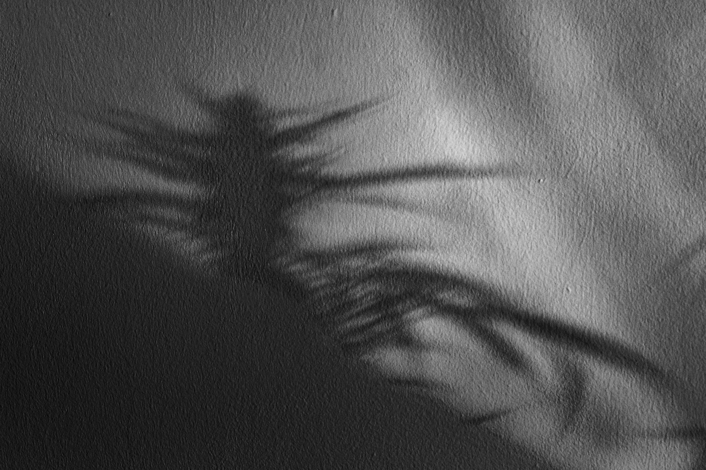

Entre a luz e o resto
A imagem surge antes de se fixar como forma. A luz atravessa o espaço e encontra resistência — matéria, superfícies, vestígios — que a difunde e transforma em presença.
O que vemos não é apenas o objeto, mas a sua passagem: um estado intermédio onde a forma permanece instável, entre aparecimento e dissolução.

